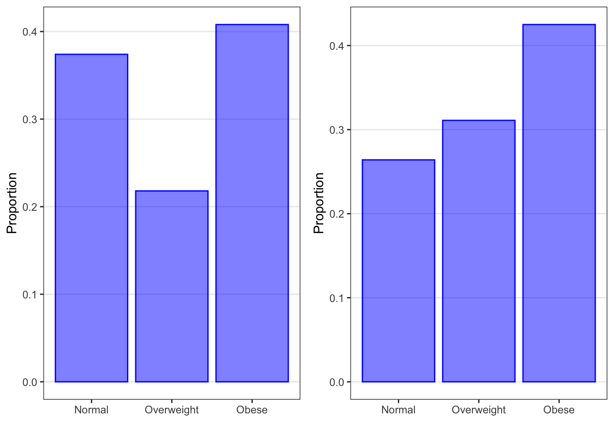

Chapter 3 Sampling
As we described in the Cycle of Research, statistical inference is the process of drawing conclusions about a population on the basis of observations from a sample. Put another way, statistical inference is the process of generalizing study results from the study sample to the population of interest. Drawing correct inferences about the population depends on knowing how representative the sample is of that population. A sample is representative of the population if every person or unit in the population of interest has the same chance of being included in the sample. If the chance of being included in the sample differs from person to person, then we are vulnerable to selection bias, which will affect our ability to make accurate inferences about the population.
3.1 What is selection bias?
In general, “bias” refers to systematic error or inaccuracy in a result. The result deviates systematically from the truth. There are a number of kinds of bias that can be introduced into a research study, usually unintentionally, at any stage from design through to publication.
Selection bias is formally defined as “A systematic tendency to favor the inclusion in a sample of selected subjects with particular characteristics while excluding those with other characteristics” (Pocket Dictionary of Statistics). Selection bias means that some members of a population were more likely to be included in the study than others. For example, if potential study participants were contacted by randomly selecting names from SnapChat, then people who do not have a SnapChat account will be systematically excluded. The resulting study sample is not representative of the population the researchers intended to study. Since the study sample is not representative of the population, the study results cannot be generalized to the population.
3.2 Random Sampling
Random sampling methods are used in research studies to minimize this type of bias. Random sampling is a sampling technique for which the probability of each individual being selected into the sample is known. Another term used for this kind of sampling is probability sampling. Three random sampling methods are commonly used in medical or public health studies: simple random sampling, stratified random sampling, and cluster random sampling.
3.2.1 Simple Random Sampling
A simple random sample (or SRS) is a random sample where each member has the same chance of being selected, and members are selected independently from each other. In other words, knowing whether other individuals were selected into the sample tells you nothing about whether or not you will be selected into the sample. When simple random sampling is carried out, each potential sample of n individuals from the population is equally likely to be selected.
For example, in a simple random sample from the population of Minnesota residents, all residents are equally likely to be chosen, regardless of who they are or where they live. In addition, the probability of a given resident being chosen does not increase (or decrease) if their neighbor is chosen.
There are two important things to note about simple random samples:
First, taking a simple random sample from a given population doesn’t guarantee that your particular sample will “look like” your population, for the same reason that tossing a fair coin 10 times doesn’t always produce exactly 5 heads and 5 tails.
Second, for practical reasons, it is rarely possible to obtain a “true” simple random sample from a population. Instead, it is an ideal that studies try to achieve to the closest degree possible, in order to obtain a sample that is representative of the entire population.
Obtaining a simple random sample (SRS) requires first that all possible members of the population of interest are identified and listed. Once that is accomplished, a random sample of size n can be chosen using a number of possible methods.
An identification (ID) for each member of the population can written on slips of paper and placed in a hat, and someone can randomly select n slips of paper. This ultra-low-tech method works for small populations, such as children in a school classroom.
A table of random numbers can be used to select n items from the population list. This method is useful when you do not have access to a computer.
A computer program (for example, random.org) can be used to randomly select n items from the population list. For example, we could have a numbered list of all 51,000 students at the University of Minnesota (our population of interest). We could use a random number generator to give us 1,000 random numbers, between 1 and 51,000. Then we would select the 1,000 students whose numbers on the list correspond to the randomly chosen numbers. These 1,000 students would form our sample.
In the health sciences, situations where you can obtain a sample via simple random sampling are quite RARE due to feasibility issues, or sometimes even to desirability issues. Study designs often dictate the nature of sampling.
3.2.2 Stratified Random Sampling
In stratified random sampling, the population is divided into subgroups, or “strata,” with similar characteristics, and a simple random sample is selected from each stratum. Common stratification variables include gender, age group, or clinic.
Typically, the motivation for doing stratified sampling is to ensure that you have “enough” of a particular subgroup to carry out your analyses of interest. For example, if you were interested in looking at differences in breast cancer tumor characteristics between men and women, you’d do stratified sampling to ensure that you had enough men in the sample to make the sex comparison with reasonable precision.
Stratified random sampling requires that information about the stratification variable or variables is available for all potential participants.
3.2.3 Cluster Random Samping
In cluster sampling, “interventions” are delivered to groups rather than individuals. The population is divided into clusters and a sample of clusters (random or not) are selected. Cluster sampling is often done in a hierarchical or multistage fashion, with the selected clusters further divided into sub-clusters from which another sample (random or not) is selected. Cluster sampling is often used in epidemiologic studies.
For example, if a study is interested in the effect of spraying insecticide to prevent malaria, the sampling is done on houses rather than individuals. Everyone in the house (the cluster) experiences the intervention at the same time, but the outcome of interest is measured at the individual level. Because of this, cluster sampling is an example of non-independent sampling.
Clusters are often defined geographically. For example, you might divide a city into neighborhoods, and the neighborhoods into blocks, and the blocks into houses. You would randomly choose a specified number of neighborhoods, and then randomly choose a specified number of blocks within those neighborhoods, and then randomly choose a specified number of houses on each block. The random selections could be simple random samples, or they could be systematic random samples (for example: select every 6th house in the block).
Cluster sampling does not require that all members of a population be identified and listed.
3.2.4 Non-Random Sampling
In non-random sampling, or non-probability sampling, the probability that a given participant is selected is unknown and may be influenced by selection bias.
In convenience sampling, participants who are readily available are enrolled until the desired sample size is reached. That is, researchers just “conveniently” grab participants who are available. Volunteer sampling is a sampling method that relies on participants who choose to respond (for example, online surveys) and are a type of convenience sample.
Quota sampling is a non-random version of stratified random sampling. Quota sampling occurs when the sample that is obtained has the same proportions of individuals as the entire population with respect to pre-specified known characteristics or traits. That is, the population is divided into categories with a required quota for each category. Participants are enrolled into the study from each category until the quota for that category is reached.
In systematic random sampling, every kth item is chosen. For example, if you were sampling customers in a store, you might approach every 10th person who walked by, or every 20th person. Systematic random sampling should not be used if there are cyclical patterns in the data. For example, selecting hospital admissions data from every seventh day or every 12th month may not be representative of the overall population of admissions and could introduce bias.
The problem with non-random samples is that they may be biased. Not all members of the population of interest have the same probability of being included in the study, so the study sample is not representative of the population. The participants who are “readily available” may differ in some ways from the population as a whole. For example, if a study of sleep apnea were done by sampling people who had recently been to a clinic for any reason, then people who had not been sick recently, or people who had no access to medical care, or people who were in hospitals, prisons, or nursing homes, or military personnel on active duty, would not be included in the study.
However, in many studies, we actually use one of these approaches to obtain our sample but then view it (and do inference) as if it were an SRS. Often, this non-random sampling is “close enough” to random sampling that we are OK with it. For example, when recruiting for a clinical trial of a new HIV medication, we don’t make a numbered list of all individuals with HIV and then contact them randomly; instead, we approach people attending HIV clinics and ask them to participate. If we want to infer something about the population, we then have to make the argument that this approach approximates random sampling because, for example, the patients attending the clinic during the recruitment period (and who agree to participate) are representative of and have approximately the same characteristics (such as gender, age, socioeconomic status, etc.) as the overall population of HIV-infected individuals.
Note that if data were collected on every member of the population of interest, then statistical inference would not be necessary. You do not need to infer from a sample to a population if you already have complete data on the population. Descriptive statistics completely represent the population when you have population data; inferential statistics are unnecessary.
3.3 Discrete Distributions
3.3.1 Random Variables
A random variable is an abstract concept that represents the values that could arise from a random process, before they are observed. A random process could be something like tossing a coin or rolling a die, or it could be randomly sampling participants from a population of interest for a survey or a clinical study. We typically use capital letters to represent random variables.
For example, the variable smoker, which describes a participant’s smoking status in the Blood Pressure dataset, can be seen as a random variable symbolized by a capital letter \(Y\). The smoker random variable can take on only two possible values: 0 if the participant is a nonsmoker, and 1 if the participant is a smoker.
Lowercase letters are used to represent the actual observed values. Every person in the Blood Pressure dataset has a measured value for the random variable smoker. The first person in the dataset is a nonsmoker, so their value is 0. We use a lower case letter, \(y\) in this case, with a subscript of 1 to indicate that this is the first person in the dataset, followed by the value for that person of 0 since they are a nonsmoker (that is, \(y_1 = 0\)). Similarly, person 15 in the Blood Pressure dataset is a smoker, so their value is 1. We note this with a lower case y, then the subscript 15, and set that equal to 1 (that is, \(y_15 = 1\)).
3.3.1.1 Discrete Random Variables
A discrete random variable is a variable that can take on only a finite (or limited) number of possible values. There are two types of discrete random variables: discrete numerical variables, which have a finite set of whole number values, and categorical variables, which have a finite number of possible categories.
The smoker variable in the Blood Pressure dataset, a categorical variable, is a discrete random variable because it can take on only two possible values: smoker (1) or nonsmoker (0).
The outcome of a die roll, a discrete numerical variable, is a discrete random variable because we can roll only one of six possible numbers: 1, 2, 3, 4, 5, or 6.
3.3.2 Distributions
A distribution describes how often different values for a random variable arise from a random process. There are three types of distributions that are discussed in this book.
A sample distribution describes how often each possible value of a variable has occurred in a specific sample. When we graph the sample data for a variable using a barplot or a histogram, we are visualizing the sample distribution.
A population distribution describes how often each possible value of a variable occurs in the population of interest.
A sampling distribution describes how often each possible value of a sample statistic (such as the sample mean) could occur in all possible samples. Sampling distributions will be discused later.
3.3.2.1 Categorical Distributions
Let’s start with distributions for categorical variables.
Categorical variables can be summarized graphically using barplots, or in tables using the number and/or proportion in each category. Either kind of summary is a sample distribution, but for clarity we will focus on graphical summaries.

The barplot on the left above is a sample distribution for the Overwt variable in the Blood Pressure dataset. Recall that the Blood Pressure dataset contains data on a sample of N=500 adults from the U.S. population. The plot is a sample distribution because it describes how often different values of the Overwt variable occur in this sample. For each possible category of the variable (normal, overweight, or obese), the plot shows the proportion of participants in the sample who fall into that category. This plot could also have been produced as the number of participants in the sample who fell into each category.
The barplot on the right above is a population distribution for weight in the U.S. adult population as determined by the Centers for Disease Control and Prevention (CDC). It is plotted using the same weight categories as in the Blood Pressure dataset. This plot is a population distribution because it describes how often different values of the weight variable occur in the population. For each possible category of the variable (normal, overweight, or obese), the plot shows the proportion of the U.S. adult population that falls into that category. Population distributions always use proportions or probabilities on the y-axis.
Note that the overall structure is the same. We have the categories on the x-axis and a measure of quantity on the y-axis.
We can see that the proportions in each weight category in the sample data (on the left) are similar to but not exactly the same as the true proportions in the population (on the right). We will learn later how to use data from a sample (as shown on the left) to make inferences about the population (as shown on the right). For now, let’s focus on what information the population distribution gives us.